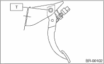

1. Position the stop light switch, etc. to the brake pedal.
2. Clean the inside of bores of the clutch pedal and brake pedal, apply grease, and set bushings into the bores.
3. Align bores of the pedal bracket, clutch pedal and brake pedal, attach brake pedal return spring and clutch pedal effort reduction spring (vehicles equipped with hill holder), then install the pedal bolt.
NOTE:
Clean up the inside of bushings and apply a thin coat of grease before installing the spacer.
Tightening torque:
T: 29 N·m (3.0 kgf-m, 22 ft-lb)

4. After attaching the brake pedal to the vehicle, adjust the position of the stop light switch.